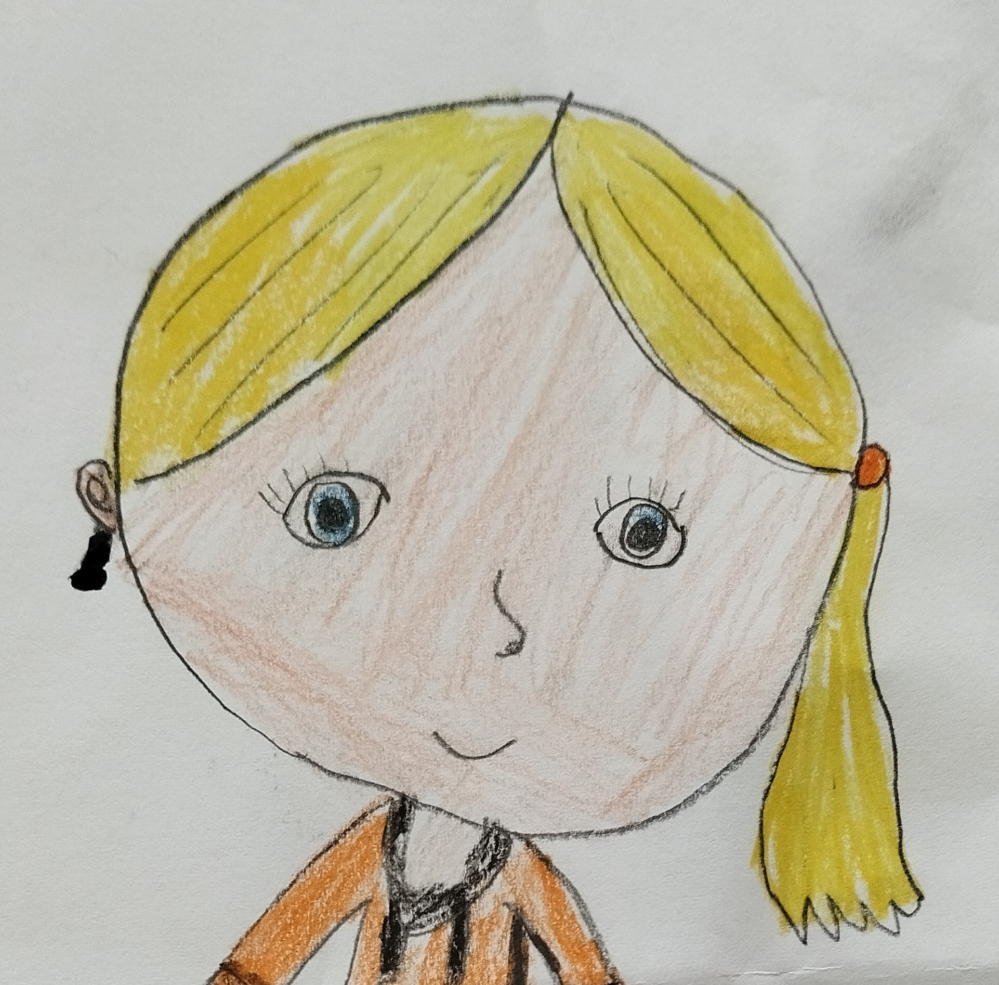

O zahradnících a učitelích
Gabriela SabolováAsi před třemi lety byl mezi učiteli základních škol proveden výzkum zaměřen na hodnocení kvality jejich života. Výsledky byly alarmující.
- Pro 53,2 % učitelů byla jejich práce zdrojem dlouhodobého stresu.
- Pouze 16 % učitelů uvedlo, že na sobě nepociťují projevy syndromu vyhoření.
- 15 % učitelů se potýkalo s projevy středně těžké, nebo těžké deprese.
Ve Staročeském slovníku jsem našla přenádherné slovo pěstúnstvo. Jedná se o archaickou variantu slov výchova a vzdělávání. Definováno je jako všestranná péče o dítě. Naši předci možná chápali, že o dítě je potřeba pečovat obdobně jako o rostlinu. Potřebuje vhodné podmínky, správné podněty, čas a důvěru.
„Výchova odkrývá schopnosti, netvoří je,“ řekl Voltaire. To, co on nazval schopnostmi, bychom jazykem současné vědy pojmenovali jako vlohy. Význam Voltairova výroku je podle mě platný i dnes. Vlohy můžeme vnímat jako semínka, kterým správná výchova pomůže vyklíčit a dorůst ve statný strom. Pokud to tak je, není hříchem zpomalit, věřit a trpělivě čekat. Kdo z nás, učitelů, se odváží? Jak by tato krátká exkurze do české etymologie mohla pomoct učitelům? To přesně nevím. Pojďme o tom diskutovat. Svému dnešnímu AHA momentu jsem se ze srdce zasmála - za svůj život jsem nepotkala ani jednoho vyhořelého a vystresovaného zahradníka.